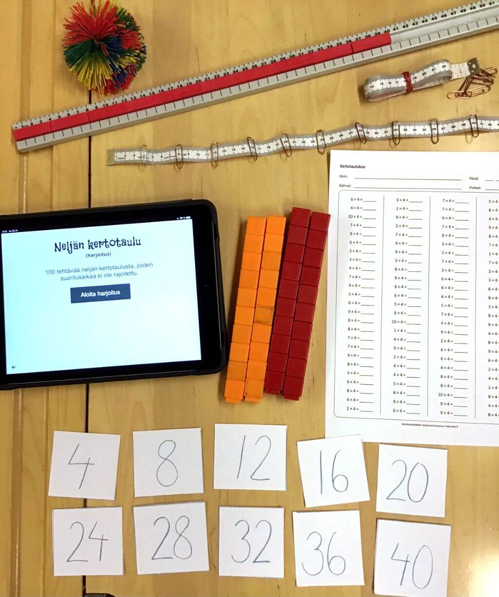

Tälle sivustolle on kerätty erilaisia äidinkielen ja matematiikan oppimiseen liittyviä toimintatapoja.
Äidinkieli

Lukunopeuden ja -tarkkuuden harjoittelu
Olemme keränneet tähän erilaisia lukunopeuden ja –tarkkuuden harjoitteluun sopivia työtapoja. Osa työtavoista on sellaisia, joita olemme käyttäneet luokassa koko ryhmän kanssa (esimerkiksi äänteiden nopea nimeäminen, porinaluku, vuorolukeminen, Minsa), osa sellaisia joita käytetään pienessä ryhmässä tukiopetuksessa tai erityisopettajan tunneilla. Materiaaleina on käytetty Tevellan ja Early Learningin tavu- ja kuvakortteja sekä Niilo Mäki Instituutin Aikamatkalla -materiaalia (Minsa, Lukuturnajaiset sekä Ekapeli). Tavukortteja on valmistettu eri kirjasarjojen Aapisten tavupalkkeja mukaillen.

Kaikki harjoitukset tehdään ääneen lukien aikuisen seuratessa. Harjoittelutuokion pituus noin 8-10 minuuttia muutaman kerran viikossa. Alla olevista harjoituksista voi valita vaihtelevasti tehtäviä päivän harjoitteluhetkeen. Kaikkia tehtäviä ei tehdä joka kerta. Näitä harjoitteita olemme myös antaneet kotiharjoitteluun oppilaalle, joka on lukemaan oppimisen vuoksi "kertaamisvaarassa".

Äänteiden nopea nimeäminen
Käytössä olevan kirjasarjan mukaan on tehty äännelappuja, joihin tulee joka viikko uusi opeteltava kirjain. Äännelappua käytetään luokassa yhdessä harjoitteluun uuden äänteen opettelun yhteydessä Niille lapsille, joilla äänteiden muistaminen on vaikeaa, lappu annetaan myös läksyksi ja se kulkee koko viikon lapsen kirjan välissä lukuläksyn lisänä.
Tavujen nopea lukeminen
Kahden-neljän kirjaimen tavulappuja laitetaan kolmeen 6:n lapun riviin. Oppilas lukee tavut oikein mahdollisimman nopeasti kolmeen kertaan tai niin monta kertaa, kun ehtii yhden minuutin aikana.
Sanojen nopea lukeminen
Sanalappuja 12-20 kpl (helpoista kahden tavun sanoista hankaliin ja pitkiin taivutettuihin sanoihin oppilaan osaamisen mukaan). Oppilas lukee sanat oikein ja mahdollisimman nopeasti kolmeen kertaan tai niin monta kertaa, kun ehtii yhden minuutin aikana.
Kuvien nopea nimeäminen
Oppilas nimeää sanat oikein ja mahdollisimman nopeasti kolmeen kertaan tai niin monta kertaa, kun ehtii yhden minuutin aikana.
MINSA
Oppilas lukee yhden minuutin tasolleen sopivaa tekstiä, laitetaan pieni merkki siihen kohtaan tekstiä, mihin oppilas ehti lukemaan.
Luetaan uudelleen alusta alkaen ja yritetään ohittaa oma merkki eli päästä pidemmälle.
Toistetaan 3-4 kertaa.
Virkkeiden toistaminen
Oppilas lukee tekstistä yhden virkkeen, jonka jälkeen hän aloittaa alusta ja lukee ensimmäisen ja toisen virkkeen, taas alkuun ja luetaan kolmannen virkkeen loppuun jne.
Luetaan esim. 10 virkettä.
Lukuturnajaiset
Luetaan yhdessä ääneen.
Toinen on kapteeni, joka johtaa lukemista ja määrää nopeuden, häntä ei saa ohittaa.
Vuorolukeminen
Aikuinen ja lapsi lukevat vuorotellen esim. satua tai kirjaa ääneen (juoni etenee ja lapsen mielenkiinto säilyy).
Luettavan pätkän pituus voi vaihdella oppilaan taidon mukaan, aikuinen voi lukea selkeästi pidemmän pätkän.
Kiertopisteharjoittelu
Yllä olevien harjoitusten yhdistäminen kiertopistetyöskentelyksi pienessä ryhmässä.
Porinaluku
Lukemisen harjoittelua oppitunnilla. Jokainen oppilas lukee omassa tahdissaan hiljaisella äänellä omaa lukuläksyään.
Ekapelin pelaaminen
Oppilas pelaa 2-3 kenttää vanhemman seuratessa pelaamista.
Sanojen kirjoittaminen
Sanojen kirjoittamisessa olemme korostaneet tavu-tavulta kirjoittamista. Taputamme ja kirjoitamme sanat tavu kerrallaan. Käytämme kirjainkortteja apuna sanojen ja tavujen kirjoittamisen harjoittelussa, koska siinä on helppo varmistaa oikeinkirjoitus ennen ekaluokkalaiselle vaativaa kirjoitustehtävää. Kirjainten järjestyksen vaihtaminen tai väärän kirjaimen korjaaminen on helppoa ja sana tai tavu kirjoitetaan kynällä vasta sitten, kun aikuinen on kuitannut korteilla kirjoitetun oikeaksi.
Sanojen kirjoittamista kirjainkorttien avulla
Matematiikka
Olemme keränneet tähän työtapoja, joita käytämme matematiikan opetuksessa 1-3 luokkien aikana. Kaikki työtavat ovat sellaisia, joita käytämme säännöllisesti koko ryhmän kanssa matematiikan oppitunneilla. Opetamme paljon matematiikkaa samanaikaisopetuksena, jolloin toinen opettaja vastaa opetuksen etenemisestä ja toinen kiertelee luokassa auttamassa, tarkistamassa ja neuvomassa välineiden käytössä. Opettaja, joka vastaa opetuksen etenemisestä, tekee tai rakentaa taululle malliksi samat laskut kuin oppilaat (esim. magneettisilla kymmenjärjestelmävälineillä). Tämä ei tule esille kaikissa videoissa, koska osassa on kuvattu vain oppilaan työskentelyä.
Aluksi toiminnallinen työskentely tuo mukanaan haasteita, koska lapset käyttävät toimintavälineitä omiin puuhiinsa ja niiden jakaminen tuo vipinää alkutunteihin, mutta melko nopeasti työskentelystä tulee luonnollinen osa oppimista. Työskentelyn helpottamiseksi olemme keränneet oppilaille pienet rasiat pulpetteihin matikkavälineitä varten ja lisäksi koulussamme on eri luokka-asteille omat matematiikkakärryt, joissa on käsiteltävän lukualueen mukaan kymmenjärjestelmävälineitä, alustoja ja muita usein tarvittavia työkaluja. Näin toiminnallinen oppiminen ei vaadi opettajalta erityisiä ponnisteluja, vaan tarvittavat välineet ovat helposti saatavilla.
Lukualue 0-20

Lukujen näyttäminen lukualueella 0-20
Käytämme lukujen näyttämiseen helminauhaa, jossa helmien värit vaihtuvat viiden välein. Näin oppilas oppii kiinnittämään luvut lukuun viisi ja käyttämään viiden voimaa lukujen näyttämisessä. Lukujen muodostaminen harjoitellaan niin, että lapsi oppii muodostamaan luvun yhdellä siirrolla.
Lukujen nimeäminen lukualueella 0-20
Käytämme lukujen nimeämiseen helminauhaa, jossa helmien värit vaihtuvat viiden välein. Aikuinen tai toinen oppilas muodostaa luvun helminauhalla ja oppilas nimeää muodostetun luvun. Tässäkin ohjaamme oppilaat käyttämään viiden voimaa.
Seitsemän hajotelma
Hajotelmien harjoittelussa käytämme viiden voimaan perustuvia alustoja, joilla oppilas oppii pelkän katseen avulla tunnistamaan lukuja. Jokaisella oppilaalla on pulpetissaan oma laminoitu hajotelma-alusta ja multilink-palikoita. Sanomme hajotelmat luokassa yhdessä ääneen hajottamisen yhteydessä ja oppilaat kirjoittavat yhteenlaskut omille suttupapereilleen.
Tässä erilaisia välineitä, joita käytämme hajotelmien opiskelussa. Tukiopetuksessa olemme tehneet oppilaille luvuista ja niiden hajotelmista omia matikkavihkoja, joihin keräämme yhden luvun hajotelmat kerrallaan.
Hajotelman harjoittelu Ahmatilla
Hajotelmien harjoittelu on työlästä ja monet lapset tarvitsevat paljon toistoja niiden oppimiseen. Käytämme Ahmattia hajotelmien ja kertotaulujen trillaamiseen. Tällä videolla näytämme, mitä apukeinoja lapselle kannattaa antaa hajotelman harjoitteluun, jotta työskentely ei mene arvailuksi, eikä lasta ala hermostuttaa liian vaikean tehtävän edessä.
Ahmatti kotiläksynä
Hajotelmien ja kertotaulujen automatisointi on työlästä ja vaatii lapsilta yleensä paljon toistoja. Tällä videolla näytämme, miten me olemme käyttäneet Ahmattia säännöllisessä hajotelmien/kertotaulujen harjoittelussa kotiläksynä.
Pikkulaskujen harjoittelua (yhteenlasku)
Eri hajotelmien pikkulaskujen opiskelussa käytämme apuna pikkulaskukortteja. Tämä toiminta sopii erityisesti tukiopetukseen pienissä ryhmissä. Samalla opettaja pystyy havainnoimaan, mitkä laskut ovat lapselle vielä vaikeita ja vaativat lisäharjoitusta.
Pikkulaskujen harjoittelua (vähennyslasku)
Eri hajotelmien pikkulaskujen opiskelussa käytämme apuna pikkulaskukortteja. Tämä toiminta sopii erityisesti tukiopetukseen pienissä ryhmissä. Samalla opettaja pystyy havainnoimaan, mitkä laskut ovat lapselle vielä vaikeita ja vaativat lisäharjoitusta.
Yhteen- ja vähennyslaskua lukualueella 0-20, ei kympin ylitystä
Kun opetamme yhteen- ja vähennyslaskua 0-20 lukualueella ilman kympin ylitystä, opetamme lapset etsimään pikkulaskun ykkösistä. Kymmenjärjestelmän rakenteen ymmärtämistä tukee hajotelmissakin käytetyt kymppiruudukot, jotka lapsilla on laminoituina pulpeteissaan.
Yhteenlaskua lukualueella 0-20 (kympin yli)
Ennen kympinylityslaskuja oppilaiden kanssa pitää harjoitella hajotelmat sujuviksi. Hajotelmien avulla tuttuja kymppiruudukkopohjia käyttäen näistäkin selvitään. Käytämme “viiksien” merkitsemistä lukujen hajottamiseen. Joissakin oppikirjasarjoissa on valmiit ruudut hajotelmille (esim. Milli), mutta olemme myös opettaneet lapset itse piirtämään hajotelmaviikset lukujen alle. Videolla näytetään sekä opettajan työskentelyä taululla, että oppilaan omaa työskentelyä ääneen ajateltuna.
Vähennyslaskua lukualueella 0-20 (kympin yli)
Ennen vähennyslaskun kymmenylitystä oppilaiden kanssa harjoitellaan hajotelmat sujuviksi. Käytämme tuttuja kymppiruudukkopohjia, jotka havainnollistavat hyvin kympin kautta kulkemisen. Videolla näytetään sekä opettajan että oppilaan työskentelyä.
Lukualue 0-1000
Lukujen rakentaminen 0-100 ja 0-1000 lukualueilla
Kymmenjärjestelmän rakenteen vahvistamiseksi tarvitaan paljon lukujen rakentamista. Käytämme kymmenjärjestelmävälineitä ja paperisia alustoja.
Lukujen rakentamisen lisäksi tähän kannattaa lisätä lukujen vertailua: mikä on rakennettua lukua 1 suurempi/pienempi, mikä on rakennettua lukua 10, 20 tai 50 suurempi/pienempi, mikä on rakennettua lukua 100, 200 tai 400 suurempi/pienempi. Oppilaat rakentavat uuden luvun eli lisäävät tai poistavat ko. lukuyksiköstä tarvittavan määrän.
Yhteenlasku kympin yli lukualueella 0-100
Harjoittelemme yhteenlaskua kympin yli 0-100 lukualueella kymmenjärjestelmävälineillä. Rakennamme luvut viiden voimaa hyödyntäen, jolloin oppilaat katseenkin avulla näkevät täyttyviin kymppeihin tarvittavien ykkösten määrän.
Vähennyslasku kympin yli lukualueella 0-100
Harjoittelemme vähennyslaskua kympin yli 0-100 lukualueella kymmenjärjestelmävälineillä. Korostamme kympin kautta kulkemista ja teemme vaihe vaiheelta koko laskun sekä välineillä että suttupaperilla “viiksineen”.
Yhteenlasku allekkain, muistinumero
Allekkain yhteenlaskua varten olemme tehneet isot alustat, joissa on jo valmiina vastausviiva. Pyrimme siihen, että lasku näyttää välineillä tehtynä mahdollisimman identtiseltä paperille tehdyn laskun kanssa. Videolla näytetään opettajan taululla käyttämät välineet ja oppilaan työskentelyä omilla välineillään.
Vähennyslaskua allekkain, lainaaminen
Myös vähennyslaskun harjoitteluun käytetään suurikokoista vastausviivan sisältävää alustaa. Lainaaminen tehdään konkreettisesti vaihtamalla kymppitanko kymmeneen ykköseen. Välineillä tapahtuva työskentely pidetään mahdollisimman identtisenä paperilla tapahtuvan työskentelyn kanssa.
Kertotaulut
Kertolaskun käsite
Harjoittelemme yhteen- ja kertolaskun yhteyttä multilink-palikoiden avulla. Laskuja rakentamalla vahvistamme kertolaskun käsitettä ja opimme myös konkreettisesti, mitä tapahtuu, jos tulontekijät menevät väärään järjestykseen.
Kertokäsite vaatii useimmilla lapsilla paljon harjoittelua ja kertolaskujen rakentamista. Tähän voi luokassa yhdistää myös laskujen keksimisen rakennetusta kertolaskusta. Se sopii hyvin myös kertolaskujen vaihdannaisuuden harjoitteluun.
Kertolaskujen harjoittelua tulolappujen avulla
Harjoittelemme kertotauluja pienillä lapuilla, joissa on ko. kertotaulun tulot. Tulot järjestellään viiden voimalla kahteen riviin, jolloin lapun paikka kertoo, mikä kertotaulu on kyseessä.
Kun kertotaulun tulot ovat näkyvissä, moni lapsi, jolla on visuaalinen muisti, on saanut helpotusta kertotaulujen oppimiseen. Tämä on avannut hienon mahdollisuuden myös tehdä havaintoja eri kertotaulujen tuloista. Työskentely sopii loistavasti koko luokan kanssa toteutettavaksi. Tulolaput voi tuntityöskentelyn jälkeen kiinnittää klemmarilla oppilaan kirjaan ja hän voi jatkaa harjoittelua kotona.
Kertotaulujen harjoittelua Ahmatilla tulolappujen avulla
Tulolaput ovat loistava keino tukea lasta kertotaulujen automatisoinnissa Ahmatin avulla. Tulolapun paikka kertoo, mikä lasku on kyseessä. Sitä mukaan, kun laskut alkavat sujua, käännellään aina helppoja tuloja piiloon.
Kertotaulujen tulojen kopittelua
Harjoittelemme kertotauluja (ja lukujonoja) kopittelemalla niiden tuloja järjestyksessä. Kertotaulut kopitellaan parin kanssa kahteen kertaan pienemmästä isompaan, että toisella kertaa vaihtuu aloittaja. Ja kahteen kertaan isommasta pienempään taas vaihtaen aloittajaa.
Matikkavälineet
Oppilailla on pulpetissaan rasia, josta löytyy palikoita, numerokortit, noppa ja helminauha. Lisäksi heillä on laminoituna lukusuorat ja kymmenruudukot.
Harjoittelemme kertotauluja laittamalla niiden tuloja klemmareilla mittanauhoihin, mittanauhan kanssa luetellaan tuloja järjestyksessä ylös ja alas. Kopittelemme kertotauluja Koosh-palloilla.
Matikkalinkkejä
Tähän olemme koonneet matematiikan oppimisen kannalta hyviä linkkejä:
- Hajotelmalaput hajotelmien harjoittelemiseen
- Hajotelmapohjat hajotelmien harjoitteluun ja testaamiseen
- Tulolaput kertotaulujen harjoittelemiseen
- Kertotaulupohjat kertotaulujen harjoitteluun ja testaamiseen
- Matikkahmatti hajotelmien ja kertotaulujen harjoitteluun
- AbacoMath - tehtäviä kymmenylitykseen ja hajotelmien harjoitteluun (vaatii Flash-liitännäisen)
- Opperi - junnauskokeen 0-20 ja 0-200
Tekijät
Olemme keränneet tälle sivustolle erilaisia matematiikan ja äidinkielen oppimiseen liittyviä toimintatapoja. Saimme mahdollisuuden videoiden tekemiseen Rata-hankkeen kautta. Videot on kuvattu ja editoitu massatuotantona kahden työpäivän aikana. Lähes kaikissa videoissa ajan säästämiseksi toinen on opettajan ja toinen oppilaan roolissa. Pyrimme pitämään videot lyhyinä niin, että keskeinen asia tulisi esiin.
Kirsi Heino ja Hanna-Leena Aalto vastaavat videoiden ja tekstien sisällöistä, Pekka Aalto sivujen teknisestä toteuttamisesta, sekä Ahmatin koodauksesta ja kertotauluihin hajoonko-sivuston tekemisestä. Äidinkielen työtavat on kerätty monista eri materiaaleista sekä koulutuksista ja ne ovat muotoutuneet pääosin Kirsin työn tuloksena laaja-alaisena erityisopettajana. Matematiikan materiaali on seurausta monista matematiikan koulutuksista sekä yhteisistä samanaikaisopetusvuosista, joiden aikana olemme kokeilleet ja kehittäneet erilaisia tapoja oppia matematiikan osa-alueita.
Sivuston muukalaiset-kuvituksen on piirtänyt Teppo Palmroos Huittisten kaupungin käyttöön.